ENIAC 2026
Balanceando o MINA-BR com um LLM uncensored
Aumento de dados para detectar discurso de ódio misógino em português brasileiro
Andrew B. Campos · Ulisses B. Corrêa · Larissa A. de Freitas · PPGC — Universidade Federal de Pelotas
Aviso: esta apresentação contém exemplos de linguagem ofensiva.
Aviso: esta apresentação contém exemplos de linguagem ofensiva.